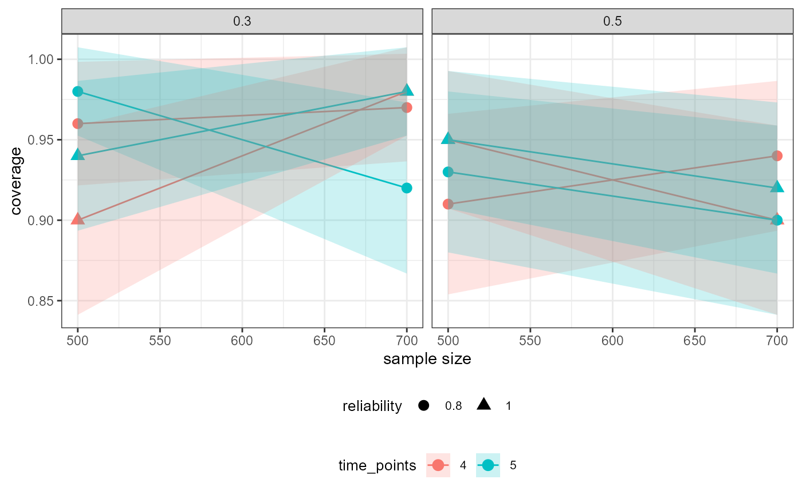
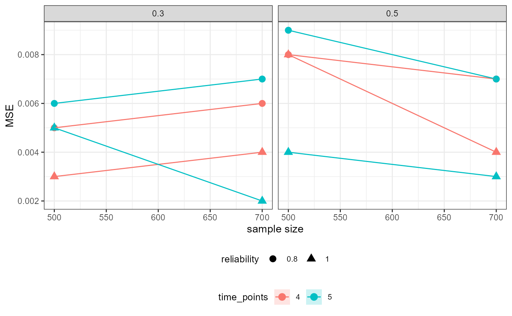
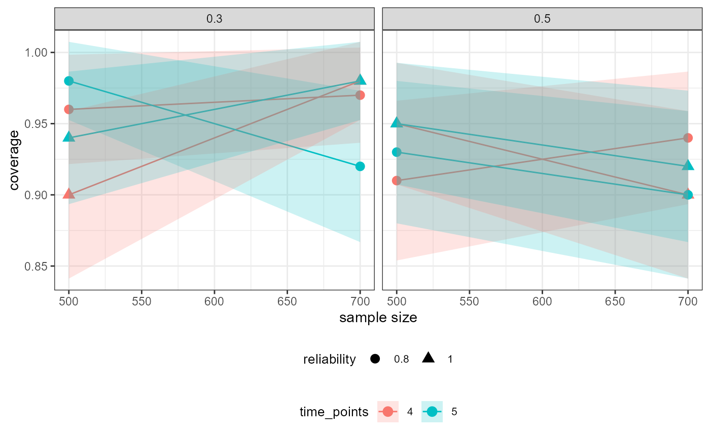
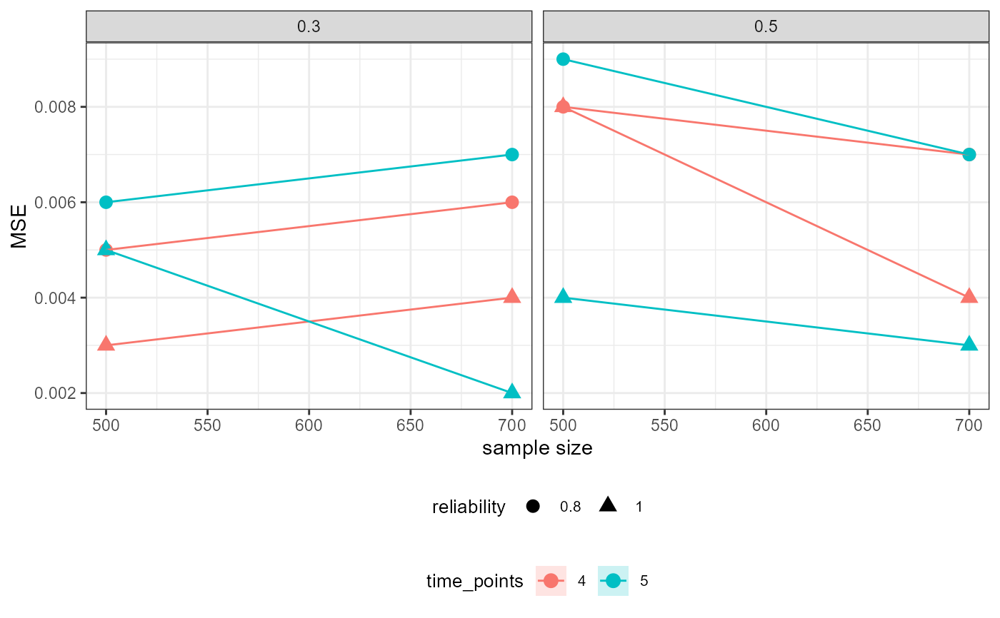

Visualizes (using ggplot2) the results from a powRICLPM analysis, for a specific parameter, across all experimental conditions. By default, sample size is plotted on the x-axis, power on the y-axis, with results colored by the number of time points, wrapped by the proportion of between-unit variance, and shaped by the reliability. Optionally, other variables can be mapped to the y-axis, x-axis, color, shape, and facets.
Usage
# S3 method for class 'powRICLPM'
plot(
x,
y = "power",
...,
parameter = NULL,
color_by = "time_points",
shape_by = "reliability",
facet_by = "ICC"
)Arguments
- x
A
powRICLPMobject.- y
(optional) A
characterstring, specifying which outcome is plotted on the y-axis (see "Details").- ...
(don't use)
- parameter
Character string of length 1, denoting the parameter to visualize the results for.
- color_by
Character string of length 1, denoting what variable to map to color (see "Details").
- shape_by
Character string of length 1, denoting what variable to map to point shapes (see "Details").
- facet_by
Character string of length 1, denoting what variable to facet by (see "Details").
Details
Mapping Options
The following outcomes can be plotted on the y-axis:
average: The average estimate.MSE: The mean square error.coverage: The coverage rateaccuracy: The average width of the confidence interval.SD: Standard deviation of parameter estimates.SEAvg: Average standard error.bias: The absolute difference between the average estimate and population value.
The following variables can be mapped to color, shape, and facet:
sample_size: Sample size.time_points: Time points.ICC: Intraclass correlation (ICC).reliability: Item-reliablity.
See also
give: Extract information (e.g., performance measures) for a specific parameter, across all experimental conditions. This function is used internally byplot.powRICLPM.
Examples
# Visualize power for "wB2~wA1" across simulation conditions
plot(out_preliminary, parameter = "wB2~wA1")

 # Visualize bias for "wB2~wA1" across simulation conditions
plot(out_preliminary, y = "bias", parameter = "wB2~wA1")
# Visualize bias for "wB2~wA1" across simulation conditions
plot(out_preliminary, y = "bias", parameter = "wB2~wA1")

 # Visualize coverage rate for "wB2~wA1" across simulation conditions
plot(out_preliminary, y = "coverage", parameter = "wB2~wA1")

# Visualize MSE for autoregressive effect across simulation conditions
plot(out_preliminary, y = "MSE", parameter = "wA2~wA1")

# Error: No parameter specified
try(plot(out_preliminary))
#> Error in icheck_plot_parameter(parameter, x) :
#> No `parameter` was specified:
#> ℹ `plot()` needs to know which specific parameter to create a plot for.
# Visualize coverage rate for "wB2~wA1" across simulation conditions
plot(out_preliminary, y = "coverage", parameter = "wB2~wA1")

# Visualize MSE for autoregressive effect across simulation conditions
plot(out_preliminary, y = "MSE", parameter = "wA2~wA1")

# Error: No parameter specified
try(plot(out_preliminary))
#> Error in icheck_plot_parameter(parameter, x) :
#> No `parameter` was specified:
#> ℹ `plot()` needs to know which specific parameter to create a plot for.